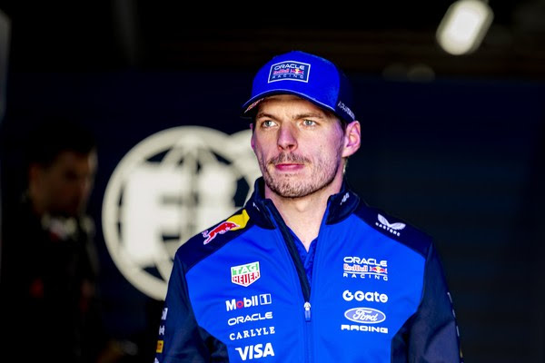

O Fim de uma Era? Max Verstappen avalia saída da Fórmula 1 em 2026

O Fim de uma Era? Max Verstappen avalia saída da Fórmula 1 em 2026
Foto: Marcel van Dorst/EYE4IMAGES/NurPhoto via Getty Images
Especial para o Grande Prêmio
O paddock da Fórmula 1 enfrenta um terremoto nos bastidores. Max Verstappen, o piloto que dominou a categoria nos últimos anos, está, pela primeira vez, considerando seriamente encerrar sua trajetória na competição ao final da temporada de 2026. Embora o holandês possua um contrato vigente com a Red Bull Racing até 2028, a existência de cláusulas de saída vinculadas ao desempenho técnico coloca seu futuro em xeque diante da nova era de regulamentações.
A Crise das "Máquinas Artificiais"
O descontentamento de Verstappen não é segredo, o piloto tem sido um crítico feroz das mudanças técnicas previstas para 2026, rotulando os novos carros como "artificiais". Para o tricampeão, a essência da pilotagem está sendo substituída por um gerenciamento excessivo de sistemas eletrônicos.
A maior preocupação reside na gestão de energia. O novo regulamento exige que os pilotos foquem drasticamente na economia de bateria para evitar o chamado "clipping" — a perda súbita de potência em linha reta. Verstappen comparou a experiência a um "videogame", onde a estratégia de software supera o talento bruto nas pistas. Os primeiros sinais de declínio da Red Bull já surgiram: no recente GP do Japão, o holandês cruzou a linha de chegada em um modesto oitavo lugar, acendendo o sinal vermelho sobre a competitividade dos novos motores desenvolvidos em parceria com a Ford.
O Mercado de Bilhões: Destinos Possíveis
Caso Verstappen decida ativar sua cláusula de rescisão, o mercado da F1 entrará em colapso financeiro. Três caminhos principais se desenham no horizonte:
Aston Martin: A equipe de Lawrence Stroll teria colocado na mesa uma proposta recorde de 264 milhões de euros por um contrato de três anos, apostando no prestígio de Adrian Newey e na nova parceria com a Honda para atrair o holandês.
Mercedes: Embora Toto Wolff tenha adotado um tom mais cauteloso recentemente, a equipe alemã permanece como o destino mais provável caso seus novos motores demonstrem superioridade técnica clara sob o novo regulamento.
Aposentadoria e Endurance: A opção mais radical é também a mais pessoal. Verstappen já manifestou o desejo de competir em categorias de Endurance (WEC) ou GT. Se o prazer de guiar na F1 desaparecer, a saída definitiva do circo da FIA é uma realidade iminente.
A Renovação na Red Bull e Racing Bulls
Ciente da instabilidade, a Red Bull já iniciou sua reestruturação. Para 2026, o jovem francês Isack Hadjar foi confirmado no time principal, ocupando a vaga de Yuki Tsunoda. Hadjar será o companheiro de Verstappen ou, em caso de saída do holandês, seu sucessor imediato.
Enquanto isso, a equipe satélite Racing Bulls (Visa Cash App RB) foca na juventude, escalando Liam Lawson ao lado do estreante Arvid Lindblad, de apenas 18 anos. O movimento sinaliza que a marca de energéticos está preparando o terreno para uma possível "vida após Verstappen", investindo pesado na nova geração para mitigar a perda de sua maior estrela.
Por: Lívia Almeida Yamauti